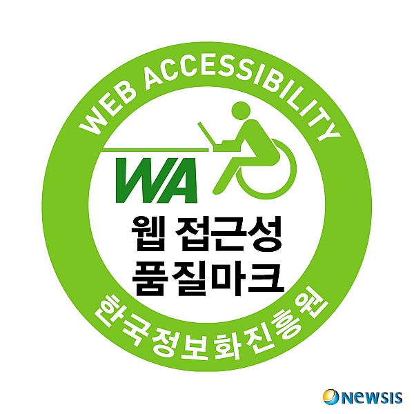

모든 사용자 (일반인, 장애인, 노인, 어린이 등)가 차별없이 이용할 스 있어야한다. 현실적으로 시작장애인을 주 대상으로 하며, 대한민국에는 장애인 차별을 금지하는 법이 있다.
웹사이트에 접근하는 모든 통신기기(운영체제, 브라우저, )의 환경과 관계없이 원활이 이용할수 있어야 한다. 현실적으로 대한민국에서는 크로스 브라우징이 중요하다.

의미에 맞는 HTML 태그를 적절히 사용하여 웹페이지 제작
신체발부 수지부모
맹자 가라사대 수업 끝나면 집에 일찍 가자.